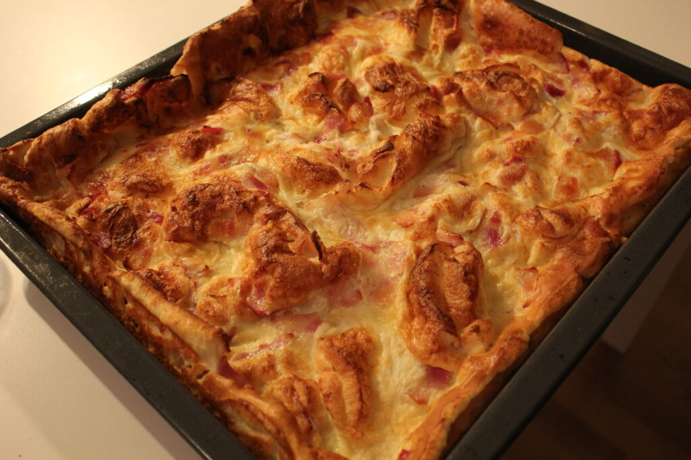

Ugnspannkaka

Description
This recipe will make you a ugnspannkaka which is easy to make and delicious.
Ingredients
- Milk 11 dl
- Flour 5 dl
- Eggs 5
- Salt 1 tsk
- vanilla sugar 1 tsk
- Bacon 140g
- Butter for pan
Steps
- Set oven to 225 degrees celsius
- Put flour, salt and vanilla sugar in a bowl
- Add half of the milk and stir until a smooth texture, then add the rest of the milk, let it rest for 10-15 min
- Butter up the pan and cut the bacon into ~5 cm bits and put in pan
- Add the eggs to the batter and stir just so they break
- Pour the batter into the pan and put in the oven for 30 min